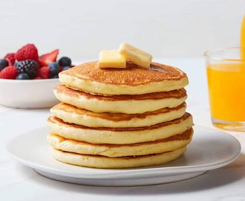

Pancakes

Ingredients
- 1 cup all-purpose flour
- 2 tablespoons sugar
- 2 teaspoons baking powder
- 1/2 teaspoon salt
- 1 cup milk
- 2 tablespoons melted butter
- 1 large egg
Instructions
- In a large bowl, mix flour, sugar, baking powder, and salt.
- In a separate bowl, whisk together milk, melted butter, and egg.
- Combine the wet and dry ingredients until just mixed.
- Heat a lightly oiled griddle or frying pan over medium-high heat.
- Pour 1/4 cup batter for each pancake.
- Cook until bubbles form on the surface, then flip and cook until golden brown.